Viva Chec
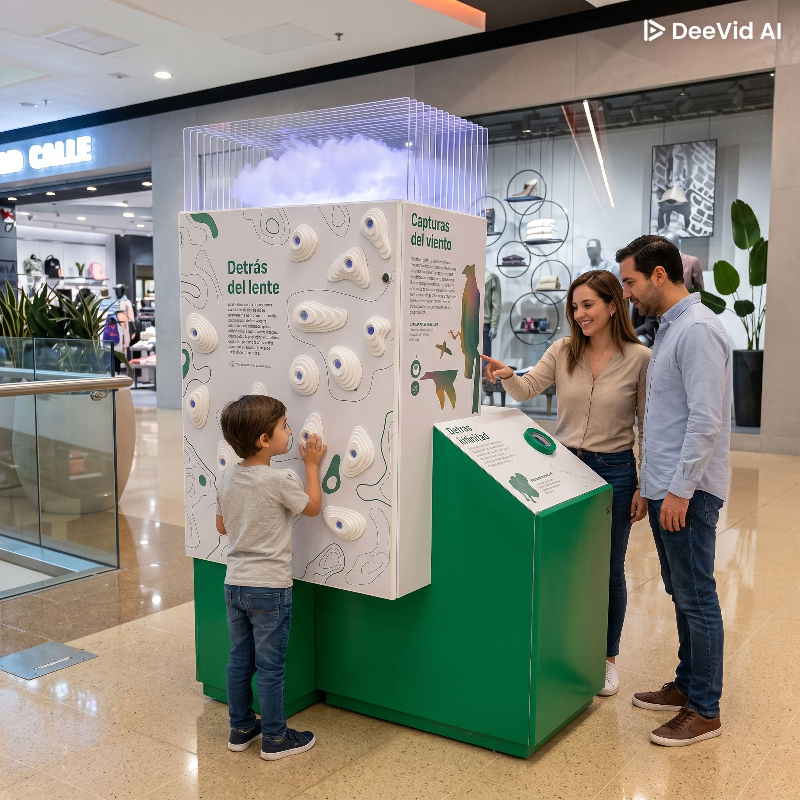
Micro Museo desarrollado para el Centro de experiencias VIVE CHEC. Se realiza con el propósito de ofrecer una experiencia educativa e interactiva para los visitantes, que invita a reflexionar sobre la oportunidad de encontrar un equilibrio entre el uso y la conservación de los recursos naturales. Se observan efectos de iluminación en el diorama y se presionan los pulsadores para reproducir los audios correspondientes.
PCB SEC
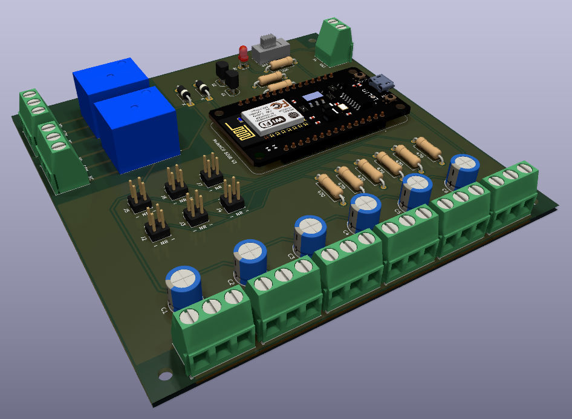
Tarjeta electrónica diseñada para la Corporación Parque Explora. Tiene como propósito controlar la iluminación de las experiencias interactivas, siendo capaz de gestionar diferentes tipos de salidas y facilitar la integración con sistemas de automatización. Diseño pensado para trabajar con la placa de desarrollo ESP8266 NodeMCU y alimentación externa de 5 y 12 VDC.
PCB MAQ
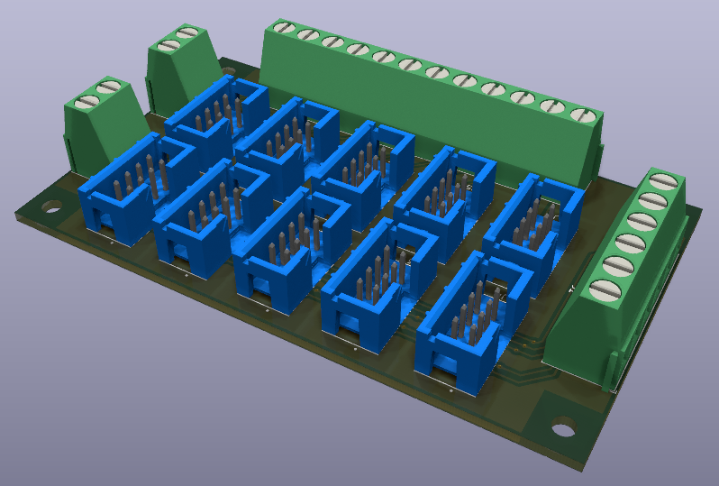
Tarjeta electrónica diseñada para el Museo MIVO en la Biblioteca Departamental Jorge Garcés Borrero. Se desarrolla con el fin de agrupar señales de diferentes módulos que emplean comunicación mediante el protocolo SPI. Permite hasta 10 conexiones en cascada; adicionalmente, cuenta con dos señales independientes para la conexión de contactos.
Oír al río
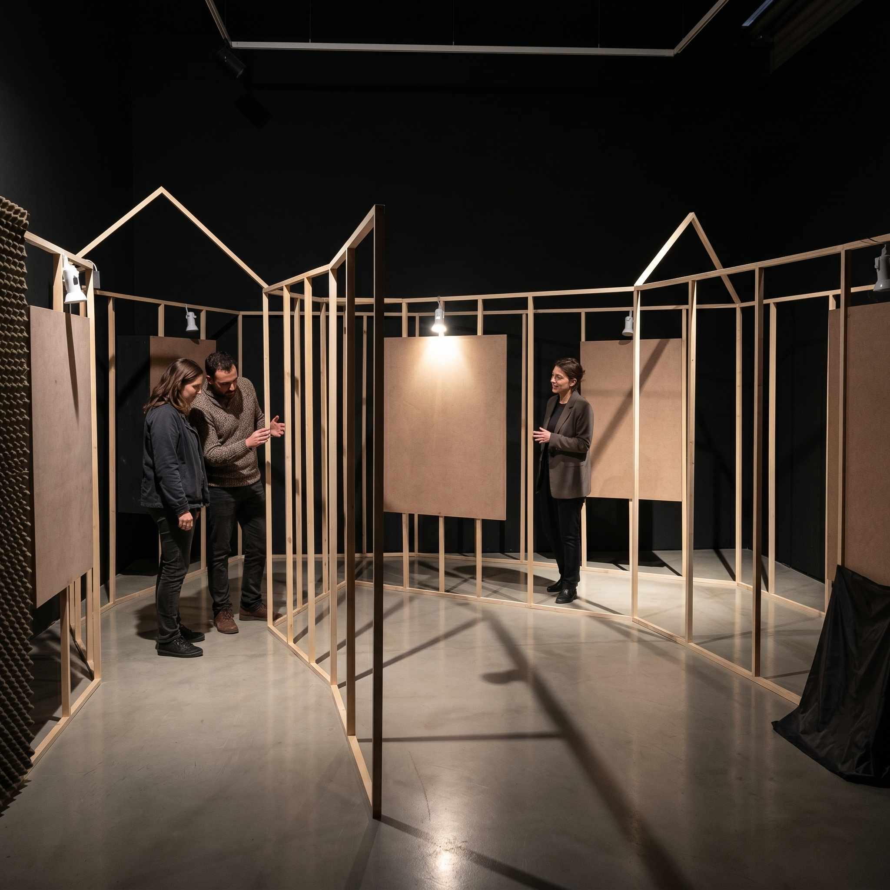
Experiencia interactiva desarrollada para el Museo Casa de la Memoria y la colectiva normal. Su propósito es que los visitantes conozcan por medio de un recorrido guiado automatizado, sobre los hallazgos del Informe final de la Comisión de la Verdad, referente al conflicto armado en colombia. Los visitantes avanzan por las estaciones a medida que se enciende una lámpara en cada una de ellas, al llegar a la estación un sensor detecta presencia y se inicia un audio, cuando el audio termina se podrá avanzar al siguiente punto.
Sonidos de animales
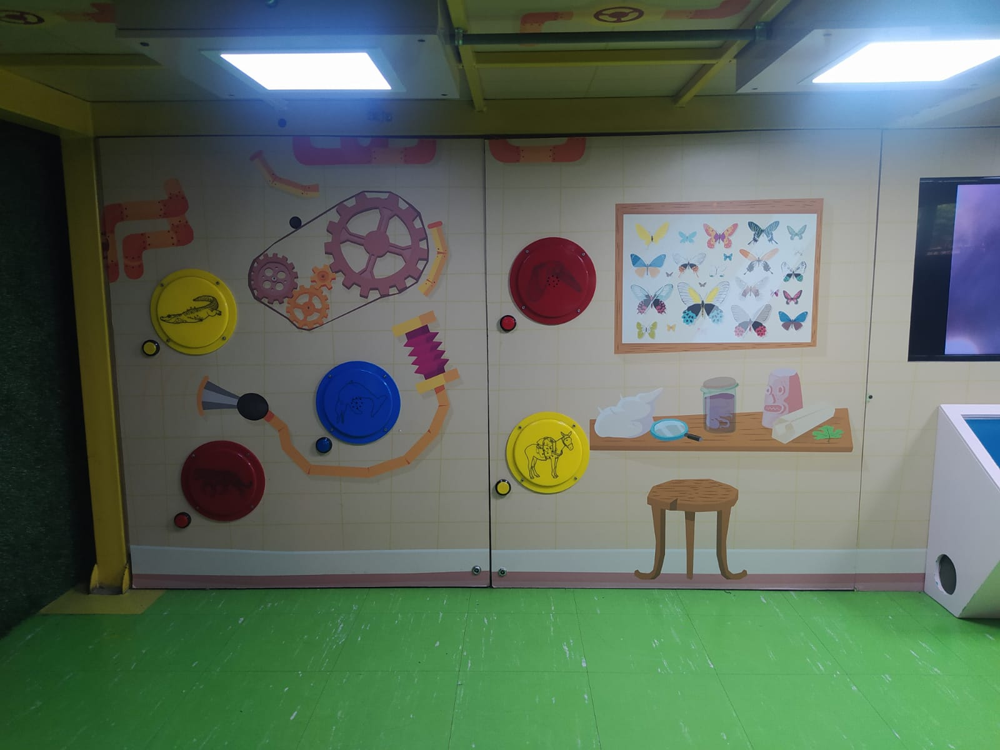
Experiencia interactiva desarrollada para la Corporación Parque Explora. Se realiza con el fin de mejorar la experiencia del usuario de una experiencia auditiva ya existente que se reproduce en loop. Los visitantes al presionar los pulsadores, pueden escuchar el audio correspondiente a cada módulo.
Huracanes
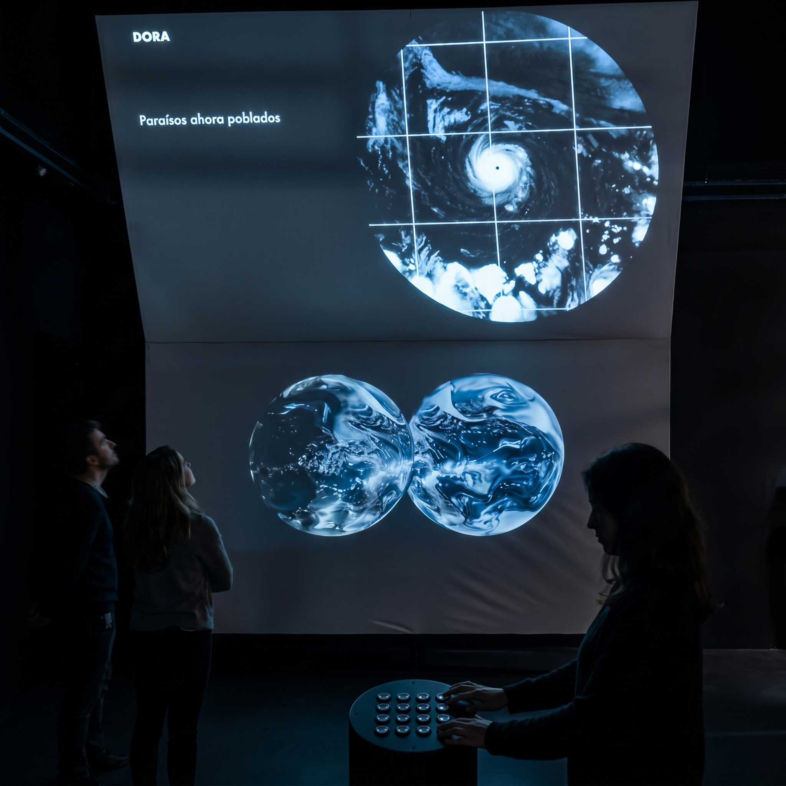
Experiencia interactiva desarrollada para la Maestra de Artes Visuales María Fernanda Calderón, que invita a las personas a reflexionar: ¿Qué uso y veracidad ponemos en los datos y qué pasa con los vacíos en la información?. Las personas toman asiento frente a una botonera. Al presionar cada uno de los díez pulsadores, se iniciará la reproducción de dos visuales en paralelo. Se controla por medio de una Raspberry Pi Master, que envía la señal a una Raspberry Pi Slave para sincronizar ambos videos.
PCB AER
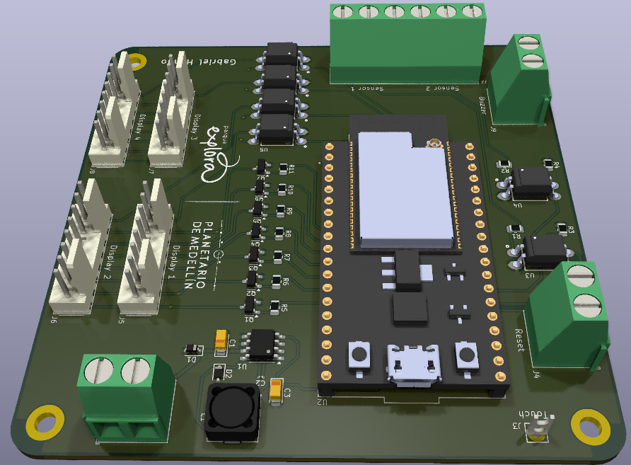
Tarjeta electrónica diseñada para la Corporación Parque Explora. Con el propósito de mejorar la experiencia interactiva Aeróbicos para el cerebro. Esta tarjeta permite centralizar las señales de entrada y salida de forma ordenada, mejorando el controlador del sistema y permitiendo realizar el mantenimiento de manera más eficiente.
Lo que cuentan las piedras
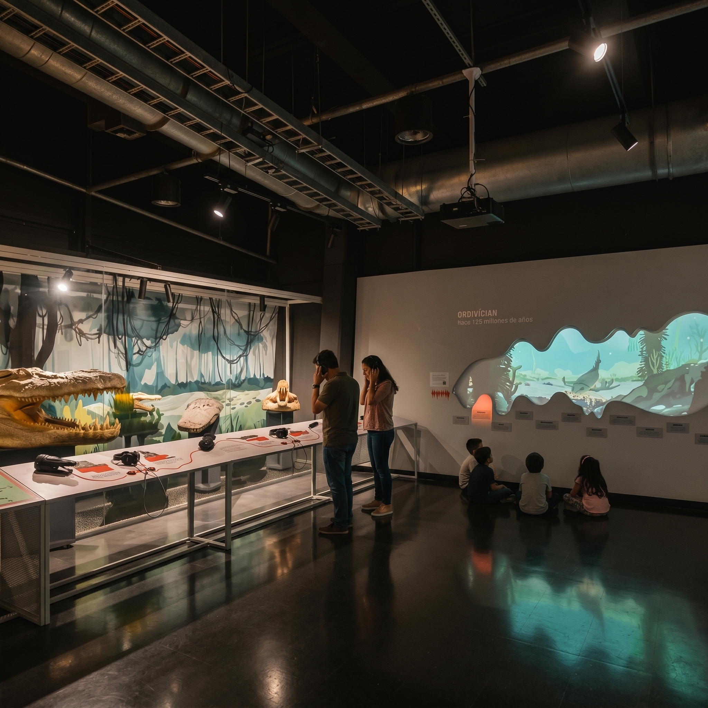
Experiencia audiovisual desarrollada para la Corporación Parque Explora. Con esta exposición se quiere abordar la Paleontología en casa. Esta experiencia cuenta con un componente visual contemplativo y cuatro reproductores de audios, que permiten escuchar listas de reproducción de algunas vivencias de paleontólogos colombianos. Las listas de reproducción se exploran por medio de pulsadores.
Todas las vidas del agua
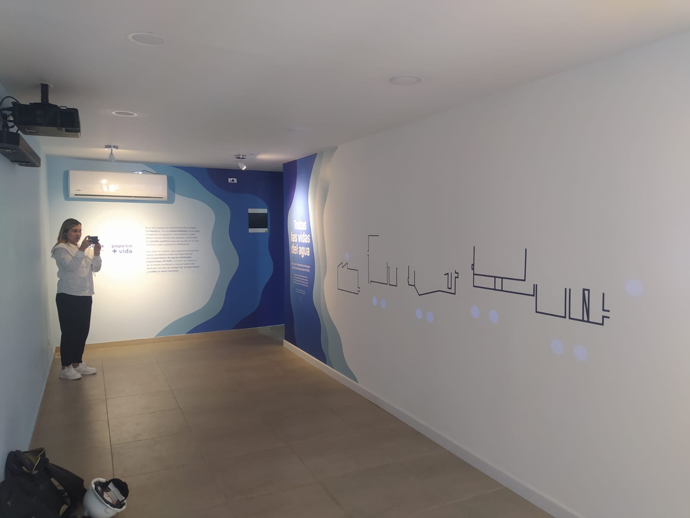
Experiencia interactiva diseñada para la multinacional PepsiCo. Tiene como finalidad enseñar a los empleados y visitantes sobre el cuidado que se debe tener con la Planta de Tratamiento de Aguas Residuales (PTAR). Las personas ponen su mano sobre los puntos azules proyectados en el muro para iniciar la reproducción de las animaciones, estas se proyectan por medio de la técnica de video mapping para encajar en los contornos, además permite activar varias animaciones al mismo tiempo.
Teléfono interactivo
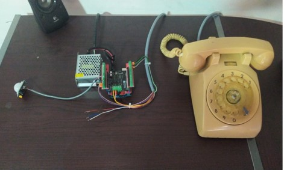
Experiencia interactiva diseñada para el Centro de Memoria del Holocausto del Palacio de Justicia y del Derecho a la Vida. Su intención es que los visitantes escuchen los testimonios de las víctimas de la toma y retoma del Palacio de Justicia, generando un espacio de reflexión y memoria. Al detectar presencia por medio de un sensor, se activa la campana del teléfono, y al contestar y marcar un número se reproduce un audio correspondientemente.
Radio interactiva
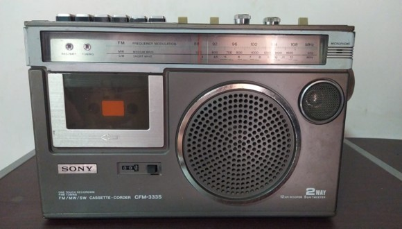
Experiencia interactiva diseñada para el Centro de Memoria del Holocausto del Palacio de Justicia y del Derecho a la Vida. Tiene como propósito que sus visitantes escuchen algunas de las narraciones radiales que se transmitían durante la retoma del Palacio de Justicia, recreando un ambiente que conecta a los usuarios con los hechos históricos. Al mover el dial se inicia la reproducción de diferentes audios, cada audio asignado a un rango de frecuencia del dial. Entre los límites de las frecuencias se escucha interferencia intencionalmente.